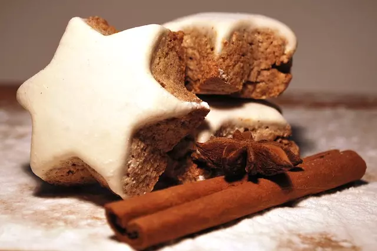

Galletitas de canela
Descubre nuestras galletas de canela artesanales: deliciosas, aromáticas y encantadoras. Sorprende a tus seres queridos con su sabor encantador.
Descubre nuestras irresistibles galletas de canela en forma de estrella. Con su aroma y sabor únicos, estas delicias caseras son perfectas para compartir momentos especiales con tus seres queridos. Sigue nuestra sencilla receta y sorprende con su encantadora presentación. Cada bocado te envolverá en un cálido abrazo de canela.
Ingredientes
- 1 taza (225 g) de mantequilla sin sal, a temperatura ambiente
- 1 taza (200 g) de azúcar granulada
- 1 huevo grande
- 1 cucharadita de extracto de vainilla
- 3 tazas (375 g) de harina para todo uso
- 1 cucharadita de polvo de hornear
- 2 cucharaditas de canela en polvo
- Una pizca de sal
Paso a paso
- En un tazón grande, mezcla la mantequilla y el azúcar hasta obtener una masa suave y cremosa.
- Agrega el huevo y el extracto de vainilla, y sigue mezclando hasta que estén bien incorporados.
- En otro tazón, tamiza la harina, el polvo de hornear, la canela y la pizca de sal. Mezcla bien los ingredientes secos.
- Poco a poco, agrega los ingredientes secos a la mezcla de mantequilla, azúcar y huevo. Combina todo hasta obtener una masa homogénea.
- Divide la masa en dos partes y envuélvelas en papel film. Refrigera por al menos 1 hora para que la masa sea más fácil de manejar.
- Prepara una superficie de trabajo enharinada y extiende una de las partes de masa con un rodillo. Debe tener aproximadamente 1/4 de pulgada (0.6 cm) de grosor.
- Con un cortador en forma de estrella, corta las galletitas y colócalas en una bandeja para horno forrada con papel encerado.
- Repite el paso anterior con la otra parte de masa.
- Pre-calienta el horno a 180°C (350°F).
- Hornea las galletitas en el horno precalentado durante 10-12 minutos, o hasta que los bordes estén ligeramente dorados.
- Saca las galletitas del horno y déjalas enfriar completamente en una rejilla antes de servir.